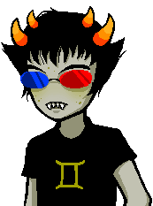
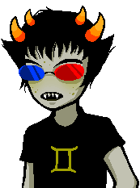
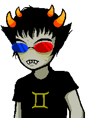
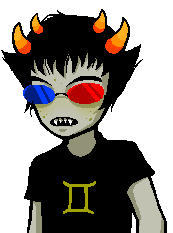

these are the homestuck edits and art I've made that are free to use with credit!!
this page needs to be styled better eventually crying kitty emoji
sprite edits
   
these are the homestuck edits and art I've made that are free to use with credit!!
this page needs to be styled better eventually crying kitty emoji